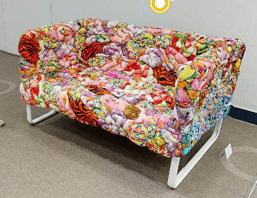
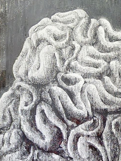

기간
2022.04.15.(금) ~ 2022.12.31.(토)
관람하기
2022 예문HADA프로젝트 Part1. 「인간과 관계」展
삶, 관계 그 연속에서의 우리
사람과 사람 사이의 관계는 끊임없이
정답과 오답을 반복하며
우리의 삶을 관계의 연속으로 만든다.
코로나 펜데믹 속에서의 관계 회복과 치유를 위해
다섯 작가들은 각자의 방법으로
관계에 대한 서로 다른 시각들을 보여준다.
이번 전시를 통해 나를 찾아가는 과정을 발견하고
우리가 나아가야 할 방향과
빛나는 미래의 간절함, 소망을 마주하기를 기대한다.

[Exquisite corpse]

[기억의 집]